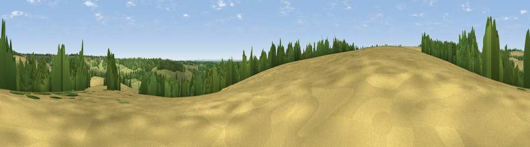

Viewpoint near Yanworth
#29409 in England · top 55% of its area beats it · near YanworthWhere it is
The exact computed spot (SP 07025 12375). Click the marker for map links.
The view, rendered

A 360° render of this exact spot computed from the terrain model, tree cover and land cover — summer colours, afternoon light, calibrated against photographs of famous viewpoints. Real trees, hedges and buildings will differ in detail.
The panorama
Grey silhouette: terrain skyline in each direction (720 bearings, Earth curvature and refraction included). Dashed green: skyline with trees (+15 m) and buildings (+8 m) as obstacles. Blue strip: how far the ground is visible on each bearing.
Where the view opens
Wedge length = distance to the farthest visible ground on that bearing (vegetation-aware). Rings at 10, 25 and 50 km.
What fills the view
39% cropland · 34% grassland · 27% woodland
Angular shares of the visible panorama (visual magnitude), not map area. Landscape diversity 0.48 (0–1 Shannon).
Key numbers
More beautiful places nearby
The staircase of upgrades: each row has a higher view potential than everything closer. Driving times are estimates from straight-line distance, calibrated against real road routing — check an actual route before setting out.
| Place | Direction | Drive | Score |
|---|---|---|---|
| Viewpoint near Chedworth | SSW · 1 km | ~3 min | 49.5 |
| Viewpoint near Rendcomb | W · 5 km | ~11 min | 51.2 |
| Viewpoint near Withington | WNW · 7 km | ~14 min | 61.0 |
| Pen Hill | W · 7 km | ~15 min | 66.4 |
| Viewpoint near Charlton Kings | WNW · 11 km | ~21 min | 70.0 |
| Viewpoint near Leckhampton | WNW · 13 km | ~23 min | 71.8 |
| Viewpoint near Prestbury | NW · 13 km | ~24 min | 72.3 |
| Viewpoint near Leckhampton | WNW · 13 km | ~24 min | 73.7 |
51.80997, -1.89951 · source: screening · position refined by local search. Computed location — check access rights before visiting.